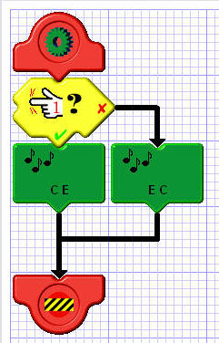
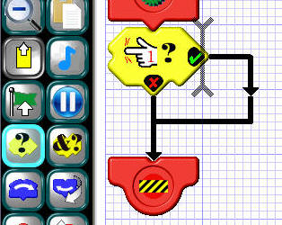
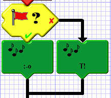
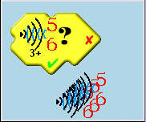
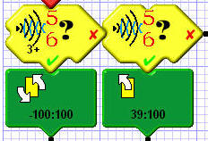
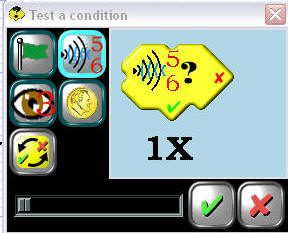
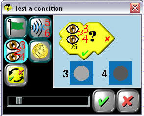
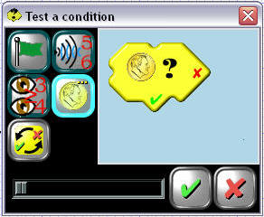

IF-THEN-ELSE
 Conditional tiles are used to create a fork in the road of your program's execution. Depending on the outcome of the chosen condition, your program may continue in one of two different directions. The simplest conditional is the IF-THEN-ELSE tile shown at the left. This tile checks to see if the touch sensor attached to pin 1 is touching something.. If this condition is met the path indicated by the green check mark is taken. If not, the path indicated by the red "X" is taken. So, overall, what this particular program does is Play a rising tone if the sensor is touching something, and plays a falling tone if it is not.The remaining button is used to switch the TRUE and FALSE directions, as the example illustrates. Notice that the reversed directions are highlighted in black to make them more obvious in your program.
When a conditional is placed, it creates several locations where additional tiles may be inserted. One is immediately to the bottom of the tile and is normally the program fork corresponding to a TRUE condition. In the example, though, we've reversed TRUE and FALSE, so here it's the path taken by the FALSE condition. Another insertion point is the arrow to the right of the tile. This is normally the path taken by the FALSE condition. But again, since we've reversed TRUE and FALSE, it's the other way around. A third insertion point is the arrow below the conditional tile. This occurs where the forking program paths rejoin. A tile place here will execute regardless of whether the condition was TRUE or FALSE.
ELSE-IF
 There is yet another insertion point available only if you happen to be inserting another conditional tile. It's just to the right of the conditional tile and is indicated by a vertical cursor.AND-IF
If you need to further restrict a condition with an additional condition, use the AND-IF tile. It can only be inserted below another conditional or AND-IF tile, as shown to the left. In this example, IF the touch sensor in pin 1 is pressed AND IF the touch sensor in pin 2 is pressed, then the motion will happen. . Both conditions have to be TRUE for the entire conditional to be TRUE; otherwise the entire conditional is deemed FALSE, and the alternate path is taken.Flag Condition
 Seven different flags can be raised or lowered with the flag action tile. The flag conditional can check any of these flags to see if they're up or not. In the example to the left, the sound played will reflect the condition of the red flag: Oh-no if it's up; the phone will ring if it's down.
You can further restrict some conditional tiles by requiring a certain number (up to 8) of consecutive observations before the condition is deemed TRUE. This is done using the slider at the bottom of the edit box. In the example to the left, an obstacke will have to have been observed on the IR Sensor connected to pins 5 and 6 at least three times in a row for the condition to be TRUE.
 If you use the same condition more than once in an ELSE-IF arrangement, but with different numbers of consecutive observations required, be sure to put the most restrictive condition first, as shown at the left. If these two tiles had been switched, the tile requiring only a single observation would still be true even if three consecutive observations had been made. Because conditions are checked in sequence, it would register TRUE first, so you'd never get to check the more restrictive condition.
Obstacle Sensor Condition

There are two ways to detect obstacles with your robot; using the touch sensors, or using the IR sensors. The condition tile indicates the pin that the sensor you are testing should be connect to on your BotBrain Board. The example to the left indicates that the IR sensor should be connect to pins 5 and 6. The placement of the sensor on your robot depends on what you are using the sensor for. For example, if you are following the right hand wall to solve a maze, the touch sensor in pin 1 might be on the right of the robot, and the touch sensor in pin 2 might be the front.The touch sensors can be used to "bump and turn". If they hit something the robot will turn. This is good for maze solving and obstacle avoidance.
The IR Sensors can be used for the same purposes; "seeing" the walls of the maze, or obstacles in front of the robot. They can also be used to detect a drop off for table top navigation.
Light Sensor Condition
 The light sensors are used in pairs. Where you put them on the robot depends on what you are doing with the robot. This program assumes that you are doing photovore (driving toward the light) The brighter the light shining on any given sensor, the higher the number it will return. These numbers can be compared with each other various combinations to achieve TRUE/FALSE conditions.There are several different conditions that can be checked, in four categories:
1. Sensor value (left or right) is at least x.
2. Sensor (left or right) is the brighter by at least x.
3. The average sensor value is at least x.
The value of "x" can range from 1 to 255 and is adjusted using the slider. As you move the slider, the graphic in the box illustrates the condition being checked. In the example, the light sensor in pin 3 must return a value of at least 15 more than the sensor in pin 4 for the condition to be TRUE. (Meaning that it is brighter on the pin 3 side.)
Coin Came Up "Heads"
 This condition enables you to add some randomness to your programs. This is useful when your robot gets stuck in a corner, for example, and you need to vary the techniques required to free it. It can also be used to vary the sounds played under a given set of circumstances. For this condition to be TRUE the coin flip has to have come up "heads". You can require that anywhere from 1 to 8 consecutive coin flips has to yield "heads" for the condition to be TRUE. This is done with the slider control. Doing so varies the probability of the result being TRUE by cutting it in half with each successive increment in the required number of consecutive "heads". The probability for one "heads" is 1/2; for two, 1/4; for three, 1/8; etc.